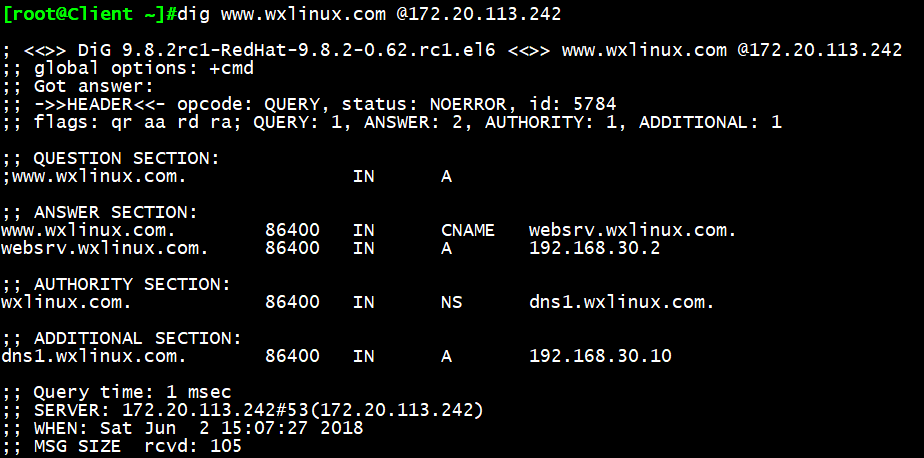

一、DNS服务相关介绍
DNS：Domain Name Service 应用层协议
C/S,53/udp, 53/tcp
BIND：Bekerley Internat Name Domain
ISC （www.isc.org）
名字解析服务：将全称域名解析为IP地址
FQDN：Fully Qualified Domain Name,完整主机名
www.magedu.com 完整主机名(FQDN)
www 主机名，或者别名
magedu.com domain域名
分散式解决方案：小环境，特定应用内部集群
/etc/hosts
集中式解决方案：NIS，适合中小型环境
分布式（既分散又集中）解决方案：DNS
本地名称解析配置文件：hosts
Linux： /etc/hosts
Windows：%WINDIR%/system32/drivers/etc/hosts
122.10.117.2 www.magedu.com
93.46.8.89 www.google.com
权威DNS服务器：查询FQDN所在的DNS服务器
13组服务器，13个IP地址存放根域
IPv6,25组跟服务器
DNS查询类型：
递归查询：负责到底
迭代查询：不负责到底
解析类型：
正向解析：FQDN –> IP
反向解析：IP –> FQDN
注意：正反向解析是两个不同的名称空间是两棵不同的解析树
DNS服务器的类型：
主DNS服务器
从DNS服务器
缓存DNS服务器（转发器）
主DNS服务器：管理和维护所负责解析的域内解析库的服务器
从DNS服务器：从主服务器或从服务器“复制”（区域传输）解析库副本
序列号：解析库版本号，主服务器解析库变化时，其序列递增 刷新时间间隔：
服务器从主服务器请求同步解析的时间间隔
重试时间间隔：从服务器请求同步失败时，再次尝试时间间隔
过期时长：从服务器联系不到主服务器时，多久后停止服务
“通知”机制：主服务器解析库发生变化时，会主动通知从服务器
bind
相关文件：
/etc/named.conf 主配置文件
/usr/sbin/named 主程序
/usr/lib/systemd/system/named.service 服务
/var/named 存放数据库
/var/named/named.localhost 区域解析库参考文件
cat /var/named/named.localhost
$TTL 1D 一天作为缓存期
@ IN SOA @ rname.invalid. ( 第一个@表示当前域名，第二个@表示主DNS服务器,rname.invalid表示管理员邮箱
0 ; serial 版本序列号，序列号越大表示数据越新，需手动更改
1D ; refresh 刷新时间
1H ; retry 重试时间
1W ; expire 过期时间
3H ) ; minimum 否定答案的TTL值
NS @
A 127.0.0.1
AAAA ::1
资源记录：
区域解析库：由众多RR组成：
资源记录：Resource Record, RR
记录类型：A, AAAA, PTR, SOA, NS, CNAME, MX
SOA：Start Of Authority，起始授权记录；一个区域解析库有且仅能有一个SOA记录，
必须位于解析库的第一条记录，定义了谁是主DNS服务器，管理员邮箱及刷新时间(从属DNS服务器拉取
主DNS服务器数据的时间)、重试时间、过期时间及否定答案的TTL值
A：internet Address，作用，FQDN –> IP
AAAA：FQDN –> IPv6
PTR：PoinTeR，IP –> FQDN
NS：Name Server，专用于标明当前区域的DNS服务器
CNAME：Canonical Name，别名记录，如www
MX：Mail eXchanger，邮件交换器
资源记录定义的格式：
语法：name [TTL] IN rr_type value
注意：
(1) TTL可从全局继承
(2) @可用于引用当前区域的名字
(3) 同一个名字可以通过多条记录定义多个不同的值；此时DNS服务器会以轮询
方式响应
(4) 同一个值也可能有多个不同的定义名字；通过多个不同的名字指向同一个值
进行定义；此仅表示通过多个不同的名字可以找到同一个主机
二、实验：搭建正向主DNS服务器
前期准备：
主DNS服务器：192.168.30.10
web服务器：192.168.30.16
客户端：192.168.30.11
实验预期：
客户端访问通过主DNS解析访问http服务器搭建的网页
具体步骤：
1主DNS服务器安装bind包：
yum install bind
2 备份主配置文件，注意保留属性
cp /etc/named.conf /etc/named.conf.bak -a
3.开启named服务
Systemctl start named
Systemctl enable named
4.修改主配置文件：
vim /etc/named.conf
options {
listen-on port 53 { localhost; };
allow-query { localhost;any; };
};

5.修改区域配置文件：
6创建区域解析数据库文件
可参照named.localhost文件进行创建
cp named.localhost magedu.com.zone -a
vim magedu.com.zone
$TTL 1D
@ IN SOA dns1.magedu.com. admin.magedu.com. (
0 ; serial
1D ; refresh
1H ; retry
1W ; expire
3H ) ; minimum
magedu.com. NS dns1
dns1 A 192.168.30.10
www A 192.168.30.16
7重新加载named服务：
Systemctl reload named 或 rndc reload
8如启动失败，可使用语法检查
named-checkconf 主配置文件语法检查
named-checkzone “magedu.com” /var/named/magedu.com.zone 解析库文件语法检查
9切换至客户端进行测试：
dig www.magedu.com @192.168.30.10 指定从192.168.30.10解析www.magedu.com
10切换到web服务器：
echo welcome to Magedu > /var/www/html/html.index
service httpd start
11.切换至客户端：
添加DNS到网卡配置文件
重启网络服务
Service httpd restart
12.测试访问www.magedu.com
我们看到，客户端已经由主DNS服务器解析成功访问到我们自己搭建的http网页！
三、实验：泛域名解析，提高访问感受
前期准备：
实验环境承接上
实验预期：
客户端访问网页时，即使将主机名输出，也可正常访问
具体步骤：
1修改主DNS服务器端区域数据库解析文件：
增加此行：泛域名解析，如wwwww.magedu.com也可正常访问
- A 192.168.30.7
2客户端测试：
我们看到即时主机名输出，也可正常访问到www.magedu.com的http页面
四、实验：利用DNS实现web服务器负载均衡
前期准备：
主DNS服务器：192.168.30.10
web服务器1：192.168.30.16
web服务器2：192.168.30.12
客户端：192.168.30.11
实验预期：
当客户端访问网页时，由主DNS服务器随机指向一台web服务器
具体步骤：
1修改区域解析库数据文件：
添加下列行：
websrv A 192.168.30.17
websrv A 192.168.30.27
www CNAME websrv
重新加载named服务:
rndc reload
2切换至客户端测试：
我们看到当ping测www.magedu.com时，将随机指向一台web服务器

五、实验：实现反向解析
前期准备：
DNS服务器：192.168.30.10
测试客户端：192.168.30.11
具体步骤：
1修改DNS服务器区域配置文件，添加反向解析区域
2添加方向区域解析数据库文件
重启named服务
rcdn reload
3切换客户端建测试
dig -x IPaddr 是一个专门测试反向解析的命令
dig -x 192.168.30.16
我们看到192.168.30.16反向解析到了websrv.magedu.com
dig -x 192.168.30.17
192.168.30.16反向解析到了appsrv.wxlinux.com
dig -x 192.168.30.100
192.168.30.16反向解析到了mail.magedu.com
与DNS服务器区域解析文件对应关系相一致
六、实验：搭建正向从DNS服务器
前期准备：
主DNS服务器：192.168.30.10
从DNS服务器：192.168.30.12
web服务器：192.168.30.16
客户端：192.168.30.11
实验预期：
搭建从DNS服务器，当主DNS服务器宕机时，由从DNS实现地址解析
具体步骤：
1.修改主DNS服务器主配置文件，
vim /etc/named.conf
options {
listen-on port 53 { localhost; };
allow-query { local;any; };
allow-transfer { 从DNS的IP }; 加此行
};
2修改主DNS服务器区域数据库解析文件
将从DNS服务器同步进去
3修改从DNS服务器主配置文件
vim /etc/named.conf
allow-transfer { none; }; 加此行
4修改从DNS服务器区域配置文件
重启named服务
rndc reload
5确认从DNS服务器slave区域文件同步成功
6模拟主DNS服务器宕机，将虚拟机网卡断开连接
7添加从服务器地址到客户端的DNS列表中：
8.客户端测试
ping www.magedu.com
经过短暂的等待（dns切换时间），从DNS服务器解析地址成功！
七、实验：实现子域
实验预期：
www.zz.magedu.com 使能正常访问
方法一：修改主DNS区域解析文件
直接将子域指向子域web服务器：
www.bj A 192.168.30.17
www.zz A 192.168.30.27
方法二：本机独立子域
适用场景：访问量不大，较小规模，由同一个主DNS服务器管理
vim /etc/named.rfc1912.zones
zone “bj.magedu.com” IN {
type master
file “bj.magedu.com.zone”;
zone “zz.magedu.com” IN {
type master
file “zz.magedu.com.zone”;

cp magedu.com.zone bj.magedu.com.zone -a
vim bj.magedu.com.zone
cp magedu.com.zone zz.magedu.com.zone -a
vim zz.magedu.com.zone
方法三：委派给另一台主机维护子域，实现分布式DNS管理
前期准备：
主域magedu.com: 192.168.30.10
子域bj.magedu.com: 192.168.30.16
web服务器1：www.magedu.com: 192.168.30.17
web服务器2：www.bj.magedu.com: 192.168.30.27
测试客户端：192.168.30.11
1关闭dnssec功能
vim /etc/named.conf
dnssec-enable no;
dnssec-validation no;
2修改主域DNS区域解析文件，主域web服务器指向192.168.30.17
vim /var/named/magedu.com.zone
$TTL 1D
@ IN SOA dns1.magedu.com. admin.magedu.com. (
0 ; serial
1D ; refresh
1H ; retry
1W ; expire
3H ) ; minimum
NS dns1.magedu.com.
bj NS dns2.magedu.com. ##新增
dns1 A 192.168.30.10
dns2 A 192.168.30.17 ##新增
3切换至子域DNS服务器，添加bj.magedu.com的区域配置
vim /etc/named.rfc1912.zones
4添加子域DNS区域解析文件，将web服务器指向192.168.30.27
重启named服务
rndc reload
5切换客户端进行测试
dig www.bj.magedu.com @192.168.30.10
ping www.bj.magedu.com
我们看到www.bj.magedu.com将通过主域DNS转发至子域DNS，再经子域DNS解析指向web服务器
dig www.magedu.com @192.168.30.10
ping www.magedu.com
而www.magedu.com还是由主域DNS负责解析，这样就实现了主域和子域DNS简单的分布式管理
八、实验：forward转发
（一）全局性转发：
对非本机所负责解析区域的请求，全转发给指定的服务器
注意：被转发的服务器需要能够为请求者做递归否则转发请求不予进行
前期准备：
DNS服务器1: 192.168.30.10
DNS服务器2: 192.168.30.16
Web服务器：192.168.30.100
测试访问端: 192.168.30.11
实验预期：
当FQDN在DNS1服务器无法解析时，直接指向到DNS2服务器进行转发
1在DNS2服务器上建立www.wxlinux.com的区域文件及解析数据库文件，并将www.wxlinux.com指向web服务器：192.168.30.100
2切换到访问端用DNS2服务器解析www.wxlinux.com，可以解析成功
dig www.wxlinux.com @192.168.30.16
3切换至DNS1服务器修改主配置文件
vim /etc/named.conf
options {
forward first|only; ##first优先在指向DNS服务器解析，only表示只在
forwarders { 192.168.30.17; } ##指向的DNS服务器解析
};
注意确定主配置文件recursion yes;并且关闭dnssec功能否则也将导致实验失败
重启named服务
rndc reload
4切换至客户端进行测试：
首先清除dns缓存记录
rndc flush
进行ping测，解析成功（由于未搭建web服务器，所以显示主机不可达）
ping www.wxlinux.com
指定DNS1服务器解析地址，发现DNS1直接指向了DNS2服务器进行解析
dig www.wxlinux.com @192.168.30.10
（二）特定区域转发：
仅转发对特定的区域的请求，比全局转发优先级高
前期准备：
同全局转发实验
实验预期：
只有在访问wxlinux.com域时，才优先指向DNS2服务器进行解析
1在DNS1删除刚才的全局配置，新增加区域配置文件内容如下：
只有当访问wxlinux.com域时，才优先转发DNS2服务器解析
vim /etc/named.rfc1912.zones
zone “wxlinux.com” IN {
type forward;
forward first|only;
forwarders {192.168.30.16;};
清理DNS1服务器的DNS缓存
rndc flush
2切换至客户端测试：
解析成功，只在访问wxlinu.com优先指向DNS2服务器进行解析
dig www.wxlinux.com @192.168.30.10
九、实验：实现智能DNS
前期准备：
DNS服务器：两块网卡地址分别为172.20.113.242和192.168.30.10
模拟192.168.30.0/24网段为北京地区地址段
模拟172.20.0.0/16 网段为上海地区地址段
实验预期：
北京用户访问时返回192.168.30.1
上海用户访问时返回192.168.30.2
其他地区用户访问时防护192.168.30.3
1在主配置文件中添加ACL
2建立与ACL映射的数据库
3建立view，一但采用viwe，必须把所有区域信息放到view语句块中，否则将失效，为了便于管理，我们将主配置文件中此段内容剪切至/etc/named.rfc19212.zones中

vim /etc/named.conf
添加view：如图
4创建view对应的区域数据信息
cp /etc/named.rfc1912.zone /etc/named.rfc1912.zone.beijing –a
cp /etc/named.rfc1912.zone /etc/named.rfc1912.zone.shanghai –a
vim /etc/named.rfc1912.zone.beijing
zone “wxlinux.com” IN {
type master
file “wxlinux.com.zone.beijing”;
vim /etc/named.rfc1912.zone.shanghai
zone “wxlinux.com” IN {
type master
file “wxlinux.com.zone.beijing”;
最终生成三个独立的区域数据信息
重启named服务
rndc reload
5切换到客户端进行测试：
（1）192.168.30.0/24测试
dig www.wxlinux.com @192.168.30.10
当地址为192.168.30.0/24段时，web服务器指向192.168.30.1
（2）172.20.0.0/16测试
dig www.wxlinux.com @172.20.113.242
当地址为172.20.0.0/16段时，web服务器指向192.168.30.2

（3）其他网段测试
切换回DNS服务器端：
dig www.wxlinux.com @127.0.0.1
由于127.0.0.1不属于上述两个网段之一，所以DNS服务器将web服务器地址指向192.168.0.3